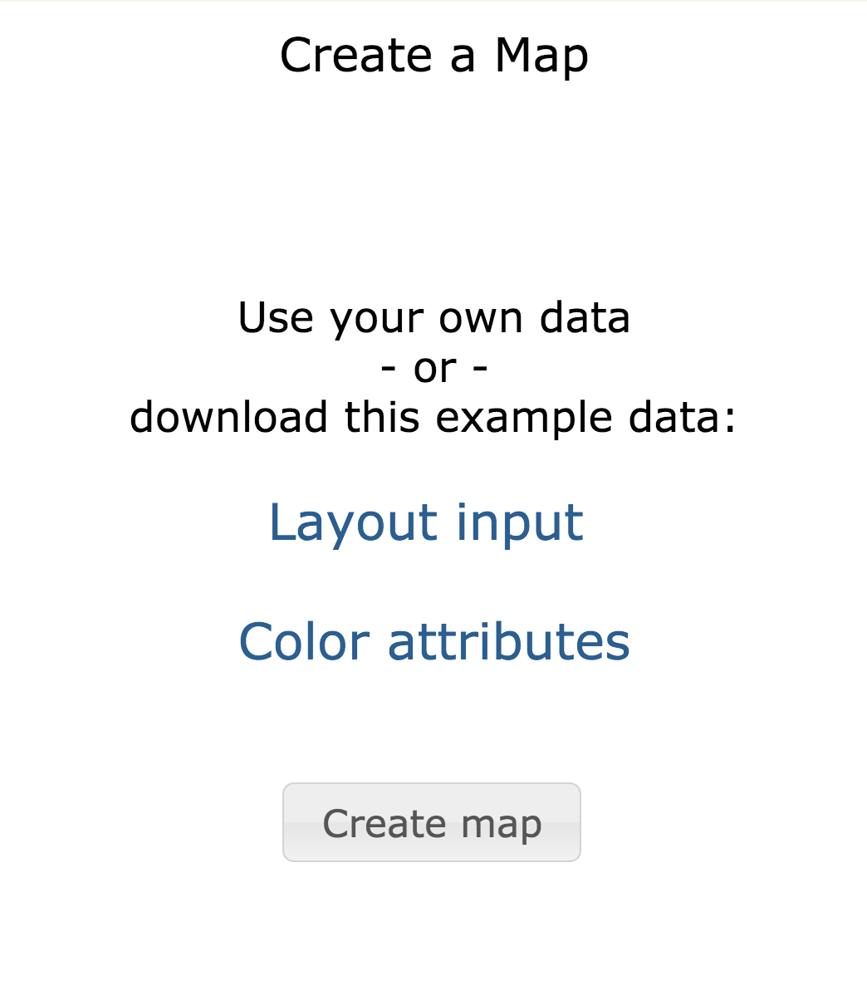

How do I create a map from my data?¶
Objective¶
Learn how to create a map from your data.
Skills Covered¶
- Building a map.
Steps¶
- Go to https://tumormap.ucsc.edu/
- If you do not see an image similar to the one below, go to the home page by clicking on the Home menu in the upper left.
{kind=link}
- If you do not see the Create a Map area as pictured below:

- scroll down
- log on
- you may not have the credentials to create a map. You may request access from hexmap at ucsc dot edu.
{kind=link}
- Click on Layout input to download the example file for the layout.
- Click on Color attributes to download the example file for the colors.
- Click on Create map to display the window below.
{kind=link}
- Click on Layout input: Choose File to select the layout input file just downloaded.
- Click on Color attributes: Choose File to select the attribute file just downloaded.
- Click on the Create button to upload the files and create the map.
- When the computations are complete the new map will load.
- To use your own data, be sure it is in the format of the example files or other formats described at Create a Map.
- Shortcut: File menu -> Create a Map.